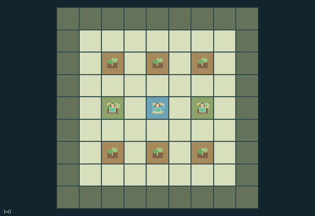

GI121 · Orchard pollination and shared habitat

Each grower earns fruit only from ripe own plots. They share three mobile pollinators, three circulating seeds and 22 initial water units, creating individual incentives to coordinate flowering and habitat care while competing for resources and six season harvest slots.
Identity and original contract
3 independently actionable roles; 13 discrete commands per role; 177 native observation columns per role; original horizon 96 steps. Declared per-step reward range: 0.0 to 3.0. Observation regime: fully_observable.
Source SHA-256: d32c5670c393d0c203935cdd1fd6b3219e2dc930059305f3f037d0494b4eeaeb
The objective, rewards, population, map and horizon remain original. A preview is not a success claim.
Objective and gameplay
Each grower earns fruit only from ripe own plots. They share three mobile pollinators, three circulating seeds and 22 initial water units, creating individual incentives to coordinate flowering and habitat care while competing for resources and six season harvest slots.
Every flowering plot changes the shared pollinators destination set. A bee carries the last visited owner label; visiting a different owner flower raises its future fruit from one to three. Habitat water restores bee visit capacity and is shared across owners. Water draws, neighbor irrigation and physical seed gifts transfer actual scarce resources; there is no cooperation-label reward.
- Each grower owns two plots and begins with one seed. Planting ties up a seed; harvesting or uprooting returns it.
- Draw from the shared tank while adjacent, carry at most two water, and irrigate any nearby plot.
- A seedling with water advances its clock; at two wet growth ticks it spends one water and flowers.
- Flowers age each tick. At age four or later, one remaining soil water makes them ripe; without water they wilt at age six.
- A ripe crop is worth one fruit, or three if a bee brought pollen from a different orchard owner.
- Three shared pollinators move toward eligible flowers other than their last plot, with explicit tie-breaking from the supplied step key.
- Each flower visit spends one of three bee visit credits. With no target or no credit, a bee seeks habitat.
- A habitat refill spends one reserve water, restores three visit credits and clears the last-plot restriction. Any grower can supply habitat water.
- Seeds can be gifted only to an adjacent named neighboring owner. Shared water and pollinator positions are physical state.
- Only actual harvest fruit earns reward. The season ends after six accepted harvests, resource exhaustion without ripe fruit, or the time limit.
Ending: The sixth accepted harvest ends the season; cyclic transaction order allocates a final scarce harvest slot without exceeding six. The season can also end when no water remains in any storage and no ripe fruit remains. Otherwise time ends at 96 transitions.
What this game explores
Resource commons & externalities: An action changes a persistent resource or burden that another role also encounters. Compare extraction with maintenance and record the downstream resource trajectory.
Commitment, exchange & governance: Promises consume time, liquidity, access or material. Separate an announced agreement from a binding commitment and from its eventual delivery; log cancellation and expiry too.
Joint transport & shared access: Positions, load geometry, occupancy and persistent access constrain whose action can succeed next. Distinguish physical handoff, shared controls and simultaneous force from a cosmetic cooperation label.
These are questions supported by rule structure, not observed learning effects.
Play it: operating walkthrough
crucibles play --game gi121Keep Python running and open its printed address. Select this game, set a seed and press Create session. The game itself is always English.
Assign a role range to Host with Assign / take over, or Assign all roles. Invite a second participant with Create player invitation, then assign a disjoint subset. Every original role is available.
For every owned role choose a legal command and press Queue. Arrow keys / WASD queue a declared directional action for the current role camera when available. Space or Advance one joint step advances everyone together. Non-directional games use the selectors.
Unqueued roles use the labelled untrained uniform-legal policy. Take over or release roles before the next step without resetting. Full-state debug is privileged and permanently logged; role cameras preserve permissions. Close the session to retain logs. Server restart does not restore sessions.
Complete command reference
IDs and English labels exactly match the manifest. Availability depends on role, resources, location and phase. An available action can still have no productive effect.
0·Wait
1·Move east
2·Move west
3·Move south
4·Move north
5·Plant one seed in nearest empty own plot within distance one
6·Draw one shared tank water within distance one, if carrying below two
7·Irrigate nearest non-full plot within distance one with one carried water; any owner allowed
8·Harvest nearest eligible ripe own plot within distance one, returning its seed
9·Add one carried water to nearest habitat within distance one, up to reserve four
10·Give one seed to previous owner id modulo three if adjacent
11·Give one seed to next owner id modulo three if adjacent
12·Uproot a nonempty own plot within distance one; return its seed without fruit reward
Roles and capability identifiers
These original role names describe capabilities, not interchangeable skins. Check each owned role's legal selector before planning handoffs.
agent_0·West orchard owner: two western plots and one circulating seed
agent_1·Middle orchard owner: two middle plots and one circulating seed
agent_2·East orchard owner: two eastern plots and one circulating seed
Information and observation permissions
The world is fully observable: all positions, owners, seed/water balances, growth clocks, pollination/fruit state, pollinator memory/targets, habitat reserves and tank balance are public native fields. Own role is an explicit one-hot. Every scene entity uses true public visibility; there is no private renderer-only plant or bee state.
The GIF is full-state debug and may reveal hidden entities or private state. Train on obs[agent], not the picture, state tree or another role's private row. Field slices and visibility are in the original manifest.
Reinforcement-learning integration
import jax
from crucibles_jaxmarl import make
env = make("gi121")
key = jax.random.PRNGKey(0)
key, rk, ak, sk = jax.random.split(key, 4)
obs, state = jax.jit(env.reset)(rk)
actions = env.sample_actions(ak, state)
obs, state, rewards, dones, info = jax.jit(env.step_env)(sk, state, actions)
done = dones["__all__"]Observations are float32 vectors of width 177; actions are scalar int32; masks have 13 entries. Supply all 3 roles each transition. Masked sampling is an engineering reference, not a trained learner.
step_env retains terminal data without reset. step performs outer autoreset and keeps terminal data in info["raw_state"] and info["raw_observation"]. Use dones["__all__"] for episode boundaries; separate completion, failure and time limit in analysis.
JIT or vmap equal identities and shapes. Split independent reset, policy and transition keys. Group different shapes explicitly; do not shrink the population or horizon. Host rendering stays outside training.
Training questions and fair evaluation
Define valid completion from the objective before fitting. Preserve original rewards and also report real deliveries/services, losses, resource state, unresolved episodes and per-role returns. Animation is not a reward signal.
An action changes a persistent resource or burden that another role also encounters. Compare extraction with maintenance and record the downstream resource trajectory.
Promises consume time, liquidity, access or material. Separate an announced agreement from a binding commitment and from its eventual delivery; log cancellation and expiry too.
Positions, load geometry, occupancy and persistent access constrain whose action can succeed next. Distinguish physical handoff, shared controls and simultaneous force from a cosmetic cooperation label.
Compare memory, communication or centralized critics under matched actor information. Declare critic access; keep actor inputs role-filtered. Match partner/opponent distributions, masks, compute and checkpoint selection. Final tests never enter fitting or selection.
Independent training runs or source-pairing blocks are inferential units; episodes from one policy are not independent training replications. Save hashes, keys, versions, device, time and cost. Negative, zero, failed and indeterminate outcomes are valid. No trained checkpoint or target score is supplied.
Classification and evidence
Overlapping editorial labels are reading aids, not proof of novelty, difficulty, strategic equivalence or learning effects.
- Resource commons & externalities
- Evidence
manifest.task.objective: Each grower earns fruit only from ripe own plots. They share three mobile pollinators, three circulating seeds and 22 initial water units, creating individual incentives to coordinate flowering and habitat care while competing for resources and six season harvest slots.
- Evidence
manifest.actions.5: Plant one seed in nearest empty own plot within distance one
- Evidence
manifest.actions.6: Draw one shared tank water within distance one, if carrying below two
- Commitment, exchange & governance
- Evidence
scene.rules.6: Each flower visit spends one of three bee visit credits. With no target or no credit, a bee seeks habitat.
- Evidence
scene.rules.7: A habitat refill spends one reserve water, restores three visit credits and clears the last-plot restriction. Any grower can supply habitat water.
- Joint transport & shared access
- Evidence
manifest.actions.6: Draw one shared tank water within distance one, if carrying below two
- Evidence
manifest.actions.7: Irrigate nearest non-full plot within distance one with one carried water; any owner allowed
- Evidence
manifest.actions.9: Add one carried water to nearest habitat within distance one, up to reserve four
Source, receipts and preview limits
The world-only English GIF replays saved untrained legal actions through the original kernel. At most 25 actual endpoints include initial and terminal state; no invented interpolation. It is full-state debug, not the role observation.
Original source, observation slices, manifest and mechanism
Native receipt · Presentation receipt
Engineering passes do not establish learning. Nonzero floating differences remain recorded and undetermined; no new tolerance was introduced. Human scores remain unverified.